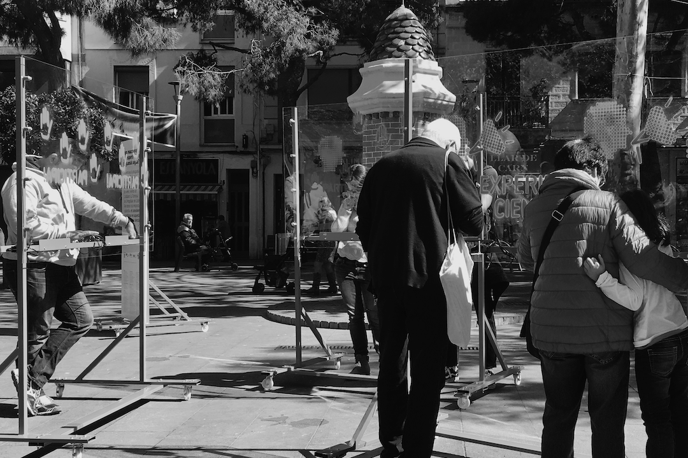

Feb. 2022 - Gen. 2024
Projecte
AI4Drought

AI4Drought és un projecte que es basa en un enfocament integral que combina la intel·ligència artificial,
sistemes de predicció climàtica estacional dinàmica i múltiples productes d'observació de la Terra. Aquest projecte té com a objectiu
millorar la capacitat de predicció de sequeres i enriquir la nostra comprensió de les causes, l'evolució i les
conseqüències de les sequeres a escales temporals estacionals. AI4Drought aspira a esdevenir una fita en la generació de
coneixement accionable sobre la relació entre els registres de dades a llarg termini d'observació de la Terra i les variables climàtiques
modelades mitjançant enfocaments innovadors d'IA multiescala.
La nostra principal contribució a AI4Drought és analitzar totes dues línies de treball (models d'IA i models basats en observació de la Terra) amb tècniques
d'intel·ligència artificial explicable (XAI) per tal de proporcionar interpretabilitat als models basats en dades i generar confiança en els resultats corresponents,
fent possible confirmar coneixement existent, qüestionar-lo i generar noves hipòtesis en el camp de les ciències del clima.
Aquest projecte ha rebut finançament de l'ESA (Agència Espacial Europea).
Mar. 2021 - Feb. 2024
Projecte
Mobius

© M.C. Escher | Bond of Union
Mobius és un projecte H2020 l'objectiu principal del qual és renovar i revitalitzar
el sector editorial europeu, proporcionant-li mètodes i eines per
aprofitar el potencial dels prosumidors en els processos d'innovació i, així,
garantir perspectives centrades en l'usuari i impulsades per l'usuari en
el disseny i el lliurament de noves experiències mediàtiques enriquides.
La nostra principal contribució a Mobius és dur a terme anàlisis basades en dades
de diferents comunitats d'usuaris, especialment centrades en comunitats de fans (AO3,
FanFiction o Fandom) i altres espais com Reddit, aplicant tècniques de mineria
de dades per extreure coneixement de l'anàlisi de comportaments col·lectius
de prosumidors.
Aquest projecte ha rebut finançament del programa d'accions d'innovació Horizon 2020
de la Unió Europea sota l'acord de subvenció núm. 957185.
1 de gener del 2021
Projecte
Patrons de mobilitat humana durant la pandèmia

© Tibidabo | Avió Tibidabo
La mobilitat humana és un dels principals indicadors per modelar la propagació d'epidèmies. Una de les intervencions no farmacològiques més importants durant els brots epidèmics és la limitació de la mobilitat amb l'objectiu de reduir el nombre de contactes i frenar la transmissió del virus. Tanmateix, l'aplicació de mesures de mobilitat reals es veu afectada per un gran nombre de variables (socials, culturals, econòmiques, geogràfiques, etc.) i a diferents escales, des de la llar fins a la nació. Aquest projecte de recerca té com a objectiu comprendre els patrons de mobilitat que emergeixen durant la pandèmia a escala urbana des d'una perspectiva social, amb especial èmfasi en les implicacions socials de les polítiques públiques.
Set. 2020 - Ago. 2023
Projectes
MediaFutures

© Marjory Collins | New York Times newsroom (1942)
MediaFutures és un projecte H2020 l'objectiu principal del qual és
construir un hub europeu d'innovació en dades, incloent-hi finançament, mentoria i suport a projectes emprenedors i creatius per redefinir la cadena de valor dels mitjans de comunicació mitjançant usos responsables i innovadors de les dades. La nostra principal contribució des d'Eurecat és posar a disposició un ampli catàleg de recursos de dades obertes i tecnologies de programari lliure per a l'explotació de dades. Això inclou conjunts de dades i eines per a la recollida, exploració i explotació de dades produïdes pels socis del projecte, així com recursos disponibles públicament. A més, oferim suport actiu en aspectes no tècnics, així com en el disseny d'experiments i la metodologia per garantir resultats vàlids i fiables a partir de la interacció amb dades de diverses fonts, incloent-hi plataformes de xarxes socials, projectes de ciència ciutadana, plataformes de govern obert i democràcia participativa, etc. Aquest projecte ha rebut finançament del programa d'accions d'innovació Horizon 2020 de la Unió Europea sota l'acord de subvenció núm. 951962.
28 de novembre del 2019
Projecte

© Domini públic | Red Cross Library Service. Brisbane, 1944
Publicació de «Citizen Science in Libraries», una guia elaborada col·lectivament per i per a bibliotecaris i ciutadans. Els bibliotecaris van proposar deu projectes multidisciplinaris de ciència ciutadana per dur a terme a les biblioteques amb els usuaris, dins el context específic de cada biblioteca. Aquesta guia es va elaborar en sessions de cocreació al «Laboratori de Ciència Ciutadana» mitjançant tallers facilitats pels membres d'OpenSystems, amb l'objectiu de construir una comunitat de ciència ciutadana al voltant de les biblioteques de Barcelona. Aquest projecte va ser finançat per la Diputació de Barcelona en el marc de BiblioLab.
1 d'octubre del 2019
Projecte

© OpenSystems | Games for Housing. Fort Pienc
«Citizen Science in Action» tenia com a objectiu cocrear un experiment de ciència ciutadana centrat en una preocupació social compartida per la comunitat al voltant de les biblioteques, per i per als usuaris de biblioteques, en tres municipis de la província de Barcelona (Granollers, Olesa de Montserrat i Fort Pienc). D'aquest procés col·laboratiu va sorgir la preocupació compartida per l'accés a l'habitatge. Tots els participants van formular i conceptualitzar una intervenció a l'espai públic per recollir evidències que responguessin a diferents preguntes de recerca. El resultat va ser «Jocs per l'Habitatge», una intervenció a l'espai públic que va consistir en quatre dies de recollida de dades sobre els diferents dilemes als quals s'enfronten els ciutadans quan ciutadans i responsables polítics intervenen en el mercat de l'habitatge.
30 de març del 2019
Projecte

© OpenSystems | La Torrassa, L'Hospitalet de Llobregat
«Aigua de Barri» va ser un projecte que va consistir en una sèrie de tallers facilitats per membres d'OpenSystems en cooperació amb Ítaca, una organització de L'Hospitalet de Llobregat dedicada a l'educació en el lleure d'infants i joves. L'objectiu principal del projecte era dur a terme activitats de ciència ciutadana, així com organitzar una performance final a l'espai públic utilitzant dilemes socials i teoria de jocs per reflexionar sobre l'ús de recursos bàsics com l'aigua. El projecte va ser finançat per la Fundació Agbar.
16 de maig del 2019
Projecte

© Thomas Vilhelm | Biennal Ciutat i Ciencia
Acció de recerca col·lectiva efímera que té com a objectiu comprendre les interaccions que es produeixen als espais públics des d'una perspectiva de gènere. Citizen Social Lab recull dades per entendre millor les diverses interaccions humanes en contextos urbans en què un conflicte determinat ens fa afrontar un dilema social. Aquest projecte ens permet investigar conflictes individuals en situacions de violència pública. «Consciències» es va dissenyar en el marc de la Biennal Ciutat i Ciència, un festival organitzat per l'Ajuntament de Barcelona, i es va tornar a dur a terme al festival de ciència ciutadana Calidoscopi per part d'OpenSystems, Nus i el col·lectiu d'estudiantes feministes d'Elisava.
1 de juliol del 2018
Projecte

© Tasmanian Archive | Teaching Aids Centre, 1951 - 1973
Participació a «STEM4Youth», un projecte H2020 que té com a objectiu promoure l'educació STEM a través de reptes científics clau i potenciar-ne l'impacte en les nostres perspectives vitals i professionals. El projecte va introduir la ciència ciutadana a les escoles d'una manera radical mitjançant la realització d'experiments col·lectius i participatius a Barcelona, Polònia i Grècia. Aquests experiments van estudiar preocupacions públiques com les desigualtats de gènere, la qualitat de l'aire o la contaminació de l'aigua, sorgides de sessions de codisseny amb estudiants [informe final]. Aquesta recerca es duu a terme mitjançant experiments conductuals, teoria de jocs i l'ús de Citizen Social Lab, una plataforma participativa per dur a terme experiments col·lectius al carrer. Aquest projecte ha rebut finançament del programa de recerca i innovació Horizon 2020 de la Unió Europea sota l'acord de subvenció núm. 710577.
15 de febrer del 2018
Projecte

© Julián Vicens | Gas Works Park, Seattle, USA
«xAire» és un projecte que proposa una mesura col·lectiva de la qualitat de l'aire a Barcelona, monitoritzant en particular la contaminació per diòxid de nitrogen (NO2), un dels contaminants més importants de la ciutat. Aquest projecte reuneix vint escoles de la ciutat de Barcelona de deu districtes per instal·lar més de 800 sensors que ajudaran a proporcionar un mapatge més precís de la qualitat de l'aire a la ciutat. Aquest projecte es duu a terme a The City Station, una clínica de salut ambiental efímera construïda a l'espai públic que posa l'accent en la recerca col·lectiva i la participació pública en la ciència. Aquest projecte és possible gràcies al patrocini de DKV i 4sfera i a la col·laboració de Mobile Week Barcelona, ISGlobal, Mapping for Change, OpenSystems, i la participació de 20 escoles de Barcelona. The City Station forma part de l'exposició del CCCB «After the end of the world».
1 de desembre del 2017
Projecte

© Julián Vicens | Pacific Spirit Regional Park, Vancouver. Canadà
«Patrons Naturals» és un projecte que aprofundeix en la relació entre la Ciència i la Natura. Mitjançant un sistema que promou l'observació de la Natura com a llenç per presentar el procés de recerca, som capaços de desvelar les implicacions de la ciència en la formació de patrons i el seu impacte, més enllà de les ciències naturals, en l'art, el disseny, l'arquitectura o la música.
12-13 de desembre del 2015
Projecte
El Joc del Clima

© Spencer Tunick | Aletsch, Alps
«El Joc del Clima» és un experiment efímer que ens permet estudiar com els individus cooperen per fer front a un risc col·lectiu com el canvi climàtic. Proposem un dilema social clàssic basat en la teoria de jocs cooperativa centrat en les negociacions per fer front al canvi climàtic. En aquest projecte, utilitzem la plataforma Citizen Social Lab per recollir les interaccions dels ciutadans i els principis de la ciència participativa per implicar-los. L'experiment principal es va dur a terme al festival DAU, on 324 persones hi van contribuir amb les seves accions. Les conclusions de l'experiment, publicades a PlosOne, van revelar que les desigualtats al voltant de les negociacions sobre el canvi climàtic són més dures per als individus, societats i organitzacions amb pocs recursos, que són, alhora, els que mostren nivells de cooperació més alts en termes relatius. La plataforma, els resultats científics, les dades i els codis són disponibles públicament seguint els principis de la ciència oberta.
16 de maig del 2015
Projecte

© Rae Bathgame | MACBA, Barcelona
«Museum Night Experiment» és un experiment de ciència ciutadana creat per observar, capturar i analitzar el "comportament cultural" dels assistents a «La Nit dels Museus» a Barcelona. L'objectiu principal és analitzar els patrons generats pels ciutadans quan visiten massivament museus i centres culturals per tal de comprendre els perfils de participació i establir una relació més eficient entre els ciutadans, els equipaments culturals i la ciutat.
1 de setembre del 2011
Projecte

© Julián Vicens | TUIO Fiducials
Aquest projecte va formar part del meu Treball de Fi de Grau d'Enginyeria centrat en el disseny i desenvolupament d'una interfície natural d'usuari i un sistema d'àudio tridimensional. El treball es basava en treballs previs d'interacció persona-ordinador i processament d'àudio. L'artefacte final crea una experiència sonora mitjançant un sistema que reacciona en temps real als marcadors col·locats sobre una interfície d'usuari de sobretaula. Cada marcador correspon a un so particular representat en un entorn tridimensional creat sobre una interfície natural d'usuari que funciona amb protocols TUIO.